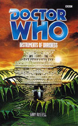

|
Instruments of Darkness
|
BASIC PLOT DOCTOR COMPANIONS Jeremy Fitzoliver isn't named, but it's clear he's John Doe (eg page 278, among others). He appeared in The Paradise of Death and The Ghosts of N-Space. MATERIALISATION CIRCUIT PREPARATORY READING It's helpful to have an idea of who Evelyn Smythe is, for which The Marian Conspiracy provides a good introduction. The Paradise of Death and The Ghosts of N-Space might be helpful as well, but I can't recommend these in good conscience. Then again, if you're reading Instruments of Darkness, you're probably a bit of a masochist to begin with, so what the hell. CONTINUITY REFERENCES Pg 17 "He had been seconded to a special military and scientific unit connected with Europe and the whole United Nations." This is UNIT. Pg 30 "And her enthusiasm coudn't be faulted, whether it was fighting off Vervoids, pan-dimensional terrorists, Chronovores or eighteen-foot Chiropterans" Terror of the Vervoids, uncertain reference, The Quantum Archangel, uncertain reference. Pg 31 "I haven't owned a car in... well, a few bodies' time." Not since Bessie. Pg 32 Reference to Peri and Grant (the latter is MA companion Grant Markham, first seen in Time of Your Life). Pg 33 Recently on a visit to London in the 1920s, the Doctor had made Mel a cosignatory on his Coutts bank account" We saw this account in Birthright. Pg 42 "Then in the 1960s, it became home to the government's newest version of black operations, C-19, and its more visible arm, UNIT." C-19 was first mentioned in Time-Flight and seen in Who Killed Kennedy, The Scales of Injustice and Business Unusual. The references to "four years ago" refer to Business Unusual and "a decade earlier" refers to The Scales of Injustice. Pg 50 "Their Sene-Net produced laptop" Business Unusual. Pg 68 "Oh, he said he was a vegetarian sometimes, when it suited him." The Doctor became a vegetarian in The Two Doctors. Pg 72 "A paramilitary task force with specialized scientific and medical sections, dealing with what one might call "the unexplained"" We get a long history of UNIT here (but see Continuity Cock-Ups). Pg 77 "He was taller than the Brigadier, and maybe a dozen years older, dressed in a black jacket, frilly white shirt and eccentric cape, with a shock of prematurely white hair." First hint that John Doe is Jeremy Fitzoliver. Pg 78 Reference to the fifth Doctor's outfit. Pg 82 "Couldn't find the phone when we first met." The Marian Conspiracy. Pg 89 "What if during some future battle with the Daleks or Chelonians or the Marmossan Horde she had lost a limb" The Chelonians first appeared in The Highest Science and Mel met them in the Decalog 3 story Fegovy. The Marmossan Horde is presumably made up here, not a reference to something. Pg 98 We get a summary of Business Unusual. Pg 101 "If not, I'll flag down the Master or that dear girl Romana" Evelyn met Romana in The Apocalypse Element. Pg 103 "So has he ever mentioned the Eye of Orion?" The Five Doctors. "Did he take you to the Kurgon Wonder?" It's suggested that Evelyn was trapped inside the TARDIS while the sixth Doctor investigated in The Sirens of Time. Pg 104 "I met one of my heroes, you know. Charles Darwin" Bloodtide. "Tonka? Tonka Travers?" Commodore Travers, from Terror of the Vervoids. Pg 110 "Should've left her on the Galapagos." Bloodtide. Pg 123 "Melanie Bush was, as far as he knew, safely back at home." Mel ends up back at home at the end of Head Games (but see Heritage). Pg 128 "Got involved in one of their weirder jobs, like the Shoreditch incident of '63 and the Henlow Downs one in the Seventies." Remembrance of the Daleks, The Invasion. Pg 132 "Doctor, do you remember when we were in London, facing down the Codex?" Millennial Rites. Pg 140 "Old Johnnie Subdury's lot." Sir John Sudbury was first mentioned in Time-Flight and appeared in The Scales of Injustice and Business Unusual. He's reported to have been killed here. Pg 143 "When you took me to Gallifrey" The Apocalypse Element. Pg 144 Reference to Tegan and Peri. Pg 145 "She even held her own against an entire Dalek army once" The Apocalypse Element. Pg 147 "A stick of Blackpool rock" The Nightmare Fair. Pg 149 "Three glowing spheres of pulsating light" Nestenes. Pgs 150-152 Jeremy has flashes of his time at UNIT, with memories of the third Doctor, the Brigadier and Sarah. Pg 165 "More dangerous than any Dalek or Stalagtron" The latter were mentioned in Millennial Rites. Pg 170 "You told me once you wanted to be a train driver." Black Orchid. Pg 174 "Now that she had witnesses many types of futuristic megabyte modems around the galaxy" The Ultimate Foe. Pg 177 "At least you went to the Eye of Orion" The Five Doctors. "You went to Gallifrey!" The Apocalypse Element. Pg 185 Reference to Romana and K9. Pg 224 "Malvern sat down on a splendidly reconditoned Louis XIV chaise longue" Probably a reference to City of Death. "From the hellfire clubs of the eighteenth century" Minuet in Hell. "Lords Sandwich and Dashwood tried to harness the powerful netherworlds of devils and magicks." Minuet in Hell. Pg 227 "Gallifrey. Rassilon. Pythia. Zagreus. Omega." Rassilon was first mentioned in The Deadly Assassin and first appeared in The Five Doctors. The Pyhia first appeared in Time's Crucible. Zagreus appears in Neverland. Omega first appeared in The Three Doctors. Pg 231 Reference to the Brigadier and the Master. Pg 257 "Your matrix on Gallifrey, yes?" First seen in The Deadly Assassin. Pg 278 "He was a journalist. Not a very good one at that. Mind you, he was a worse photographer." The Paradise of Death. "I suppose the IRIS just got put to one side." Planet of the Spiders. OLD FRIENDS AND OLD ENEMIES Ciara and Cellan appeared in The Scales of Injustice and Business Unusual. NEW FRIENDS AND NEW ENEMIES Sebastian Malvern, Tko-Ma (the Cylox Magnate).
CONTINUITY COCK-UPS PLUGGING THE HOLES [Fan-wank theorizing of how to fix continuity cock-ups] FEATURED ALIEN RACES The Cylox, tall humanoids with long necks and massive brains (see page 254). FEATURED LOCATIONS Los Angeles, 22 July 1857 and 22 July 1972. Oxford, 5 April 1978. Reunion, 4 May 1988. Halcham (the Peak District), Gohnn (a state island of Micronesia), Auckland, York, Los Angeles, Paris, Norfolk Broads, driving to London via Lincolnshire, Wessex Downs, Brighton, Derbyshire, London. Late December 1993/early 1994. IN SUMMARY - Robert Smith? |
|
 |